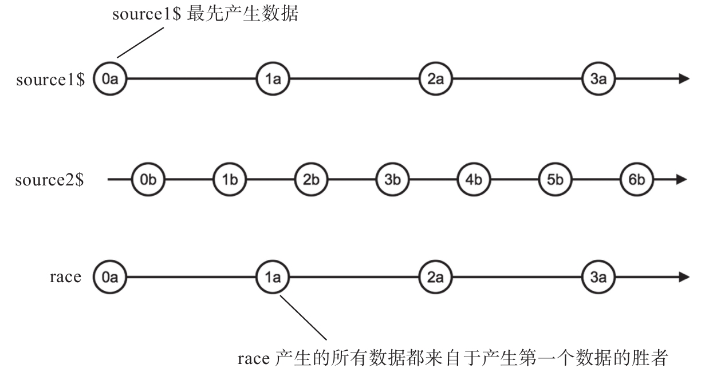

startWith只有实例操作符的形式，其功能是让一个Observable对象在被订阅的时候，总是先吐出指定的若干个数据。下面是使用startWith的示例代码：

图5-10 race的弹珠图
import {Observable} from 'rxjs/Observable';
import 'rxjs/add/observable/timer';
import 'rxjs/add/operator/startWith';
const original$ = Observable.timer(0, 1000);
const result$ = original$.startWith('start');
result$.subscribe(
console.log,
null,
() => console.log('complete')
);
上面的代码运行会产生如下结果：
start 0 1
其中，start会立刻输出，然后每隔1秒钟输出一个数字。很明显，对于startWith产生的Observable对象，当被订阅的时候会立刻吐出startWith的参数，然后就该上游Observable对象上场产生数据了。
startWith还支持多个参数，这样就可以让产生的Observable对象一开始就吐出多个数据，当然，这些数据也是同步产生的。
其实，startWith的功能完全可以通过concat来实现，比如上面的代码，可以用下面的方式实现：
const original$ = Observable.timer(1000, 1000);
const result$ = Observable.of('start').concat(original$);
也可以看出，为什么concat可以实现同样功能但是RxJS还是提供了一个startWith的原因，这是因为如果使用concat，那无论用静态操作符或者实例操作符的形式，original$都只能放在参数列表里，不能调用original$的concat函数，这样一来，也就没有办法形成连续的链式调用。
总之，startWith满足了需要连续链式调用的要求，像下面这样：
original$.map(x => x * 2).startWith('start').map(x => x + 'ok');
这同样解释了为什么RxJS提供了startWith这个操作符，却没有提供endWith，因为真的需要endWith的功能的话，直接使用concat就好了，代码如下：
original$.map(x => x * 2).concat(Observable.of('end')).map(x => x + 'ok');
startWith的一点不足是所有参数都是同步吐出的，如果需要异步吐出参数，那还是只能利用concat。